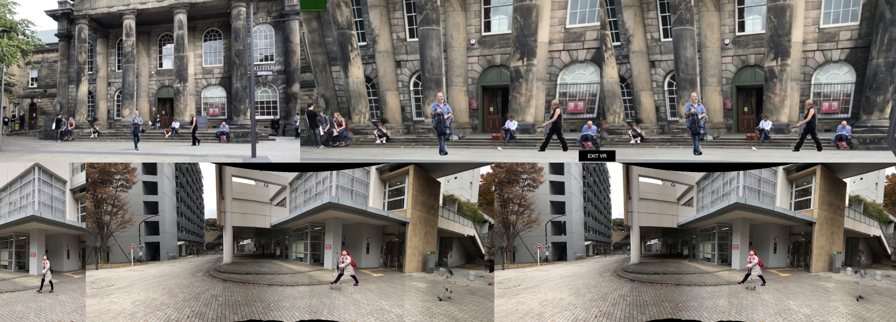
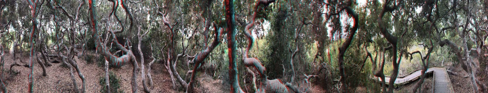

PanoSynthVR

In this project, we investigated how real-time, 360 degree view synthesis can be achieved on current virtual reality hardware from a single panoramic image input. We introduce a light-weight method to automatically convert a single panoramic input into a multi-cylinder image representation that supports real-time, free-viewpoint view synthesis rendering for virtual reality. We apply an existing convolutional neural network trained on pinhole images to a cylindrical panorama with wrap padding to ensure agreement between the left and right edges. The network outputs a stack of semi-transparent panoramas at varying depths which can be easily rendered and composited with over blending. Quantitative experiments and a user study show that the method produces convincing parallax and fewer artifacts than a textured mesh representation.
WebXR examples
The WebXR viewer is best experienced in Google Chrome on desktop or on a compatible VR headset.
Stefanie Zollmann, Anthony Dickson, Jonathan Ventura
CasualVRVideos: VR videos from casual stationary videos
VRST '20: 26th ACM Symposium on Virtual Reality Software and Technology, 2020
CasualVRVideos

Thanks to the ubiquity of devices capable of recording and playing back video, the amount of video files is growing at a rapid rate. Most of us have now video recordings of major events in our lives. However, until today, these videos are captured mainly in 2D and are mostly used for screen-based video replay. Currently there is no way for watching them in more immersive environments such as on a VR headset. They are simply not optimized for playback in stereoscopic displays or even tracked Virtual Reality devices. In this work, we present CasualVRVideos, a first approach that works towards solving these issues by extracting spatial information from video footage recorded in 2D, so that it can later be played back in VR displays to increase the immersion. We focus in particular on the challenging scenario when the camera itself is not moving.
Stefanie Zollmann, Anthony Dickson, Jonathan Ventura
CasualVRVideos: VR videos from casual stationary videos
VRST '20: 26th ACM Symposium on Virtual Reality Software and Technology, 2020
CasualStereo

Hand-held capture of stereo panoramas involves spinning the camera in a roughly circular path to acquire a dense set of views of the scene. However, most existing structure-from-motion pipelines fail when trying to reconstruct such trajectories, due to the small baseline between frames. In this work, we evaluate the use of spherical structure-from-motion for reconstructing handheld stereo panorama captures. The spherical motion constraint introduces a strong regularization on the structure-from-motion process which mitigates the small-baseline problem, making it well-suited to the use case of stereo panorama capture with a handheld camera. We demonstrate the effectiveness of spherical structure-from-motion for casual capture of high-resolution stereo panoramas and validate our results with a user study.
Lewis Baker, Steven Mills, Stefanie Zollmann, Jonathan Ventura
CasualStereo: Casual Capture of Stereo Panoramas with Spherical Structure-from-Motion
IEEE Conference on Virtual Reality and 3D User Interfaces (IEEE VR), 2020, Honourable Mention Award.
Lewis Baker, Stefanie Zollmann, Jonathan Ventura
Spherical Structure-from-Motion for Casual Capture of Stereo Panoramas
IEEE Conference on Virtual Reality and 3D User Interfaces
(IEEE VR 2019)
Github
Baker, L., S. Mills, S. Zollmann, and J. Ventura, "CasualStereo: Casual Capture of Stereo Panoramas with Spherical Structure-from-Motion", IEEE Conference on Virtual Reality and 3D User Interfaces (VR), 2020.
daf
Contact Us
For any inquiries or questions regarding our research project, please contact us at:
Email: [insert email address here]
Phone: [insert phone number here]
Address: [insert address here]